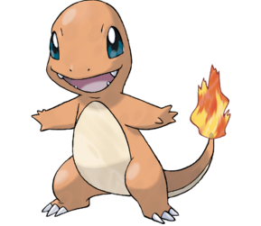

Os starters do pokemon geralmente são divididos em 3 elementos,planta, fogo e agua
Na primeira geração os starters são:Bulbasaur, Charmander e Squirtle
|
 | |
|---|---|---|
| Bulbasaur | Charmander | Squirtle |
Voce pode clicar nas imagens para te levar a pagina da bulbapedia de cada pokemon, lá voce poderá encontrar mais informações relacionada a cada um deles